File list
This special page shows all uploaded files.
{kind=link}
| Date | Name | Thumbnail | Size | User | Description | Versions |
|---|---|---|---|---|---|---|
| 23:17, 24 November 2015 | BlackRibbon.gif (file) | 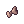 | 132 bytes | Lai | 1 | |
| 23:20, 24 November 2015 | GreenRibbon.gif (file) | 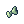 | 132 bytes | Lai | 1 | |
| 23:22, 24 November 2015 | OrangeRibbon.gif (file) | 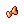 | 132 bytes | Lai | 1 | |
| 23:22, 24 November 2015 | PinkRibbon.gif (file) | 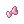 | 132 bytes | Lai | 1 | |
| 23:23, 24 November 2015 | RedRibbon.gif (file) | 132 bytes | Lai | 1 | ||
| 23:24, 24 November 2015 | WhiteRibbon.gif (file) |  |
132 bytes | Lai | 1 | |
| 23:25, 24 November 2015 | YellowRibbon.gif (file) | 132 bytes | Lai | 1 | ||
| 12:22, 23 November 2018 | 1789.gif (file) |  |
135 bytes | AloeLeaflet | 1 | |
| 00:14, 22 September 2015 | Chewedpencil.gif (file) | 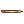 | 136 bytes | AloeLeaflet | 1 | |
| 01:05, 22 September 2015 | Four leaf clover.gif (file) | 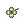 | 160 bytes | AloeLeaflet | 1 | |
| 06:28, 9 April 2016 | Gold.gif (file) | 160 bytes | Ihsan | 1 | ||
| 19:51, 14 April 2016 | 5800.png (file) | 173 bytes | Mayo | 1 | ||
| 03:37, 25 September 2021 | No skill.png (file) |  |
174 bytes | I Know To Write | 2 | |
| 20:12, 10 February 2016 | Rgem.gif (file) | 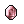 | 184 bytes | Mayo | 1 | |
| 23:17, 24 November 2015 | BlueDroopingCat.gif (file) | 194 bytes | Lai | 1 | ||
| 20:12, 10 February 2016 | Bgem.gif (file) | 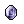 | 195 bytes | Mayo | 1 | |
| 23:18, 24 November 2015 | BrownDeviruchiHat.gif (file) | 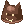 | 196 bytes | Lai | 1 | |
| 23:19, 24 November 2015 | GrayDeviruchiHat.gif (file) | 196 bytes | Lai | 1 | ||
| 23:22, 24 November 2015 | RedDeviruchiHat.gif (file) | 196 bytes | Lai | 1 | ||
| 23:18, 24 November 2015 | BrownDroopingCat.gif (file) | 201 bytes | Lai | 1 | ||
| 23:19, 24 November 2015 | GrayDroopingCat.gif (file) | 201 bytes | Lai | 1 | ||
| 23:22, 24 November 2015 | PinkDroopingCat.gif (file) | 201 bytes | Lai | 1 | ||
| 23:24, 24 November 2015 | YellowDroopingCat.gif (file) | 201 bytes | Lai | 1 | ||
| 23:37, 26 February 2021 | Descript11.png (file) | 202 bytes | IllegalKross | 1 | ||
| 00:14, 22 September 2015 | Rainbowscarf.gif (file) | 207 bytes | AloeLeaflet | 1 | ||
| 09:41, 9 September 2016 | Wellchewed.png (file) |  |
208 bytes | Appleproject | 1 | |
| 23:19, 24 November 2015 | DroopingCat.gif (file) | 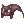 | 215 bytes | Lai | 1 | |
| 23:19, 24 November 2015 | DeviruchiHat.gif (file) | 220 bytes | Lai | 1 | ||
| 19:49, 14 April 2016 | 18611.png (file) | 224 bytes | Mayo | 1 | ||
| 23:16, 24 November 2015 | Beanie.gif (file) | 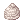 | 226 bytes | Lai | 1 | |
| 06:32, 9 April 2016 | Rideword Hat.gif (file) | 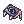 | 226 bytes | Ihsan | 1 | |
| 01:01, 22 September 2015 | Asgardblessing.gif (file) | 228 bytes | AloeLeaflet | 1 | ||
| 23:23, 24 November 2015 | Ribbon.gif (file) | 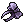 | 232 bytes | Lai | 1 | |
| 04:58, 1 October 2016 | Fortunity - Spare Card.png (file) | 233 bytes | Akenoyuki | 1 | ||
| 09:40, 9 September 2016 | Robo.png (file) | 233 bytes | Appleproject | 1 | ||
| 23:20, 24 November 2015 | MajesticGoat.gif (file) |  |
239 bytes | Lai | 1 | |
| 13:49, 3 October 2016 | Rag203.gif (file) | 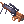 | 241 bytes | Appleproject | 1 | |
| 06:47, 13 September 2017 | Pticon 1acolyte.png (file) | 254 bytes | Renata | 1 | ||
| 00:42, 17 September 2015 | Sembryo.gif (file) | 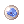 | 262 bytes | AloeLeaflet | 1 | |
| 15:27, 30 September 2016 | Fortunity - Ancient Gold Ornament.gif (file) | 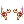 | 263 bytes | Akenoyuki | 1 | |
| 06:15, 9 April 2016 | Thanatos Katar.gif (file) | 269 bytes | Ihsan | 1 | ||
| 11:24, 15 April 2016 | 2023.png (file) | 272 bytes | Mayo | 1 | ||
| 01:01, 18 September 2015 | Morningdewofygg.png (file) | 272 bytes | AloeLeaflet | 1 | ||
| 11:15, 11 September 2018 | Mc cartdecorate.gif (file) | 277 bytes | AloeLeaflet | 1 | ||
| 23:20, 24 November 2015 | LemonDyestuffs.gif (file) | 278 bytes | Lai | 1 | ||
| 14:04, 4 February 2016 | Aclasscoin.png (file) | 280 bytes | Adri | 1 | ||
| 19:48, 14 April 2016 | 5463.png (file) | 282 bytes | Mayo | 1 | ||
| 23:18, 24 November 2015 | CobaltBlueDyestuffs.gif (file) | 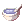 | 283 bytes | Lai | 1 | |
| 23:18, 24 November 2015 | DarkgreenDyestuffs.gif (file) | 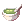 | 283 bytes | Lai | 1 | |
| 23:23, 24 November 2015 | ScarletDyestuffs.gif (file) | 283 bytes | Lai | 1 |
{kind=link}
{kind=link}
{kind=link}
{kind=link}
{kind=link}
{kind=link}
{kind=link}
{kind=link}
{kind=link}
{kind=link}
{kind=link}
{kind=link}
{kind=link}
{kind=link}
{kind=link}
{kind=link}
{kind=link}
{kind=link}
{kind=link}
{kind=link}
{kind=link}
{kind=link}
{kind=link}
{kind=link}
{kind=link}
{kind=link}
{kind=link}
{kind=link}
{kind=link}
{kind=link}
{kind=link}
{kind=link}
{kind=link}
{kind=link}
{kind=link}
{kind=link}
{kind=link}